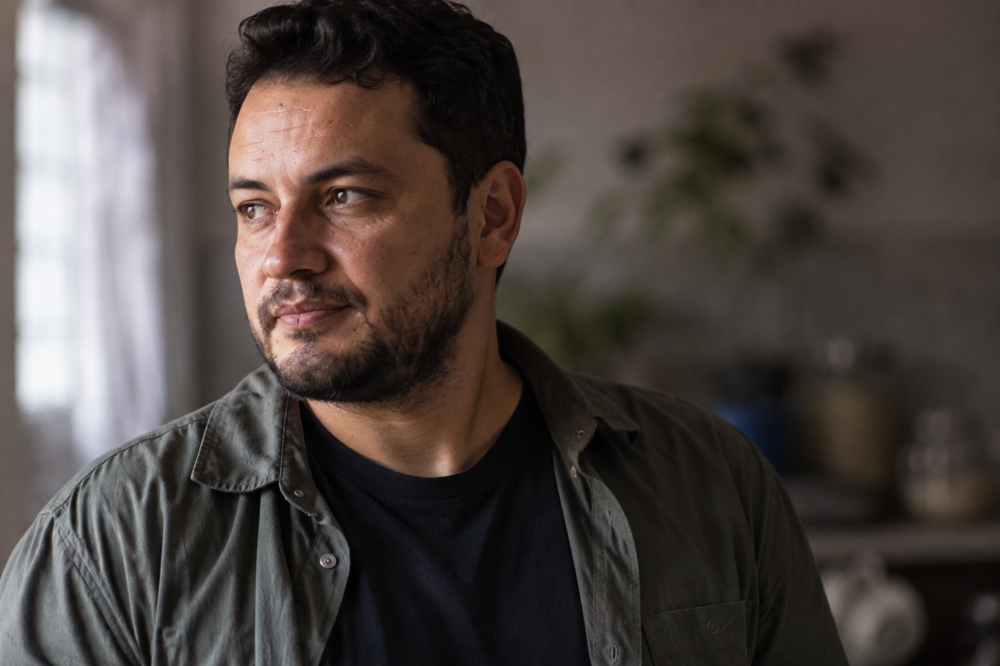
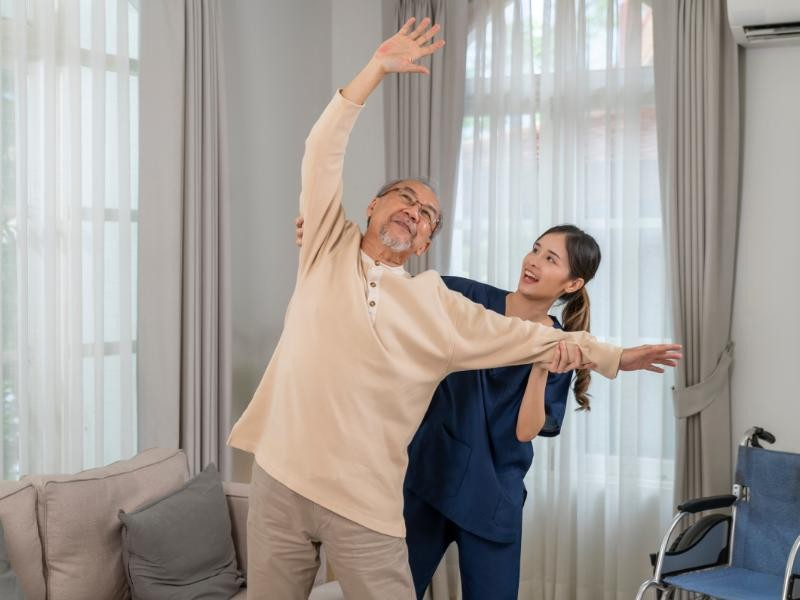

Para famílias
Acompanhe de perto, mesmo à distância
- Escolha o cuidadoVeja os serviços e os perfis dos cuidadores.
- Converse e contrateFale com o cuidador antes de fechar.
- AcompanheVeja quem cuidou, o que foi feito e atualizações de saúde e rotina.
O Laço conecta cuidadores de confiança a idosos e seus familiares, acompanhando rotina, saúde e bem-estar em um só lugar.
Um caminho simples para cada lado do cuidado.

O tipo de cuidado que sua família pode ter ao contratar um de nossos cuidadores. Atendimento de manhã, tarde e noite.

Assistência com tarefas diárias, no conforto de casa.
Banho, troca de roupas e cuidados diários, com respeito e atenção.
Organização e administração conforme a prescrição médica e os horários definidos.
Consultas, exames e passeios, com segurança durante o trajeto.
Conversa, lazer e interação para estimular o bem-estar emocional.
Refeições simples e saudáveis, respeitando restrições e recomendações médicas.
Os cuidadores não fazem faxina nem lavam e passam roupas, e não substituem profissionais de saúde.
Dúvida sobre um profissional, um serviço ou o app? Envie o formulário e a equipe responde em breve.
Dúvidas comuns sobre nossos cuidadores.
O cuidador não faz trabalhos domésticos: não lava nem passa roupas e não faz faxina nas residências.
Todos passam por um processo de seleção, com envio de documentos oficiais e acompanhamento constante pelas avaliações de clientes.
Sim. Você pode entrar em contato antes da contratação para tirar dúvidas, conhecer a experiência e garantir que ele atende às necessidades do idoso.
Sim. Depende da disponibilidade de cada cuidador. No perfil do profissional você vê os horários de atendimento.